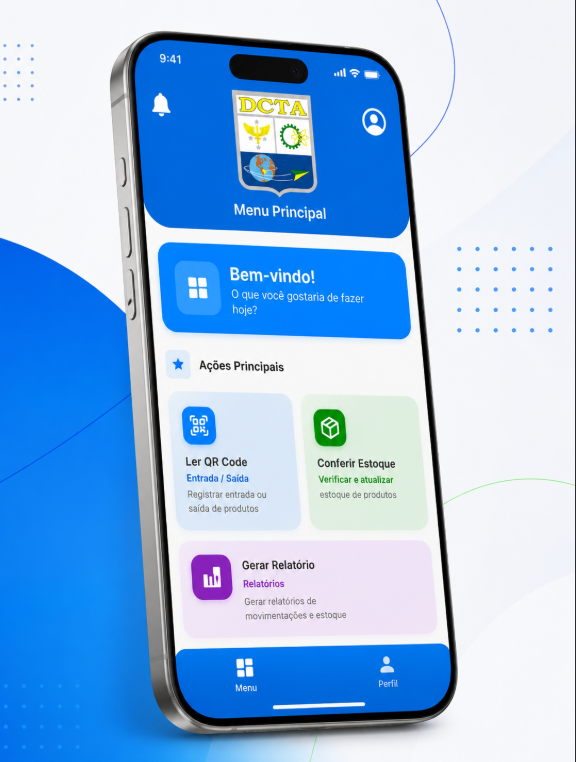

Projetos API
Seis semestres de Atividades Práticas Integradoras (API) com clientes reais. Cada projeto representa uma stack diferente, um papel diferente e uma evolução real como desenvolvedor.

Projeto API 1DSM — segundo semestre de 2023
A aplicação foi desenvolvida para fornecer informações sobre hospitais no Brasil que atendem crianças com problemas renais crônicos. Permite consultar nome, endereço, telefone e especialidades de cada hospital, além de filtrar por localização. A plataforma também inclui um fórum de discussões com chat ao vivo…

Projeto API 2DSM — primeiro semestre de 2024
O projeto API 2DSM foi desenvolvido com o objetivo de criar uma plataforma de atendimento ao cliente, focada em um sistema de gestão de tickets e chat em tempo real. Utilizando React no frontend, a aplicação oferece três tipos de acesso: Cliente, Atendente e Administrador…

Projeto API 3DSM — segundo semestre de 2024
O Projeto API 3DSM foi desenvolvido para o cliente AFAPG com o objetivo de criar um portal de transparência, onde são exibidos detalhadamente os gastos realizados com doações empresariais em projetos sociais. Utilizando o framework Spring no backend com Java…

Projeto API 4DSM — primeiro semestre de 2025
Desenvolvido por alunos do 4º semestre de DSM para o cliente Tecsus, este projeto realiza a coleta e processamento de dados de Estações Meteorológicas. O sistema permite inserção e busca de dados, além da exibição de estatísticas em gráficos interativos…

Projeto API 5DSM — Sistema da Guarnição de Caçapava
Sistema de Gestão Administrativa desenvolvido para a Guarnição de Caçapava com interfaces web e mobile. Digitaliza e automatiza a gestão de almoxarifado — controle em tempo real de estoque, histórico de movimentações, requisições, fornecedores, ordens de compra e relatórios. Apresentado para General, Coronel e Tenentes da guarnição…


Projeto API 6DSM — Atlas (Visiona)
Sistema desenvolvido para a empresa Visiona — Atlas é um chatbot com Processamento de Linguagem Natural (PLN) que atende em linguagem humana e está conectado a dados geoespaciais oficiais. Para qualquer pergunta sobre queimadas, desmatamento, áreas rurais e outros indicadores territoriais, o chat retorna o mapa do estado de São Paulo com todas as informações relevantes…
Projetos profissionais e pessoais
Além dos projetos acadêmicos de API, atuo em demandas reais: um projeto profissional desenvolvido na ProNext e um freela pessoal em andamento — cada um com minhas contribuições pessoais.
App de Automatização de Processos Jurídicos
Aplicativo desenvolvido do zero na ProNext para a sede de Campinas de uma multinacional do agronegócio. Automatiza fluxos de aprovação, documentação e comunicação entre áreas, eliminando etapas manuais e reduzindo o tempo de ciclo. O impacto foi reconhecido pelo hall global da empresa.

App de Controle de Estoque — DCTA
Aplicativo mobile em Flutter, desenvolvido como freela para o DCTA (Departamento de Ciência e Tecnologia Aeroespacial). Faz o controle completo de estoque — entrada, saída e permanência de itens, checagem dos itens presentes, leitura de QR Code e geração de relatórios. Backend em Java. Projeto em andamento.